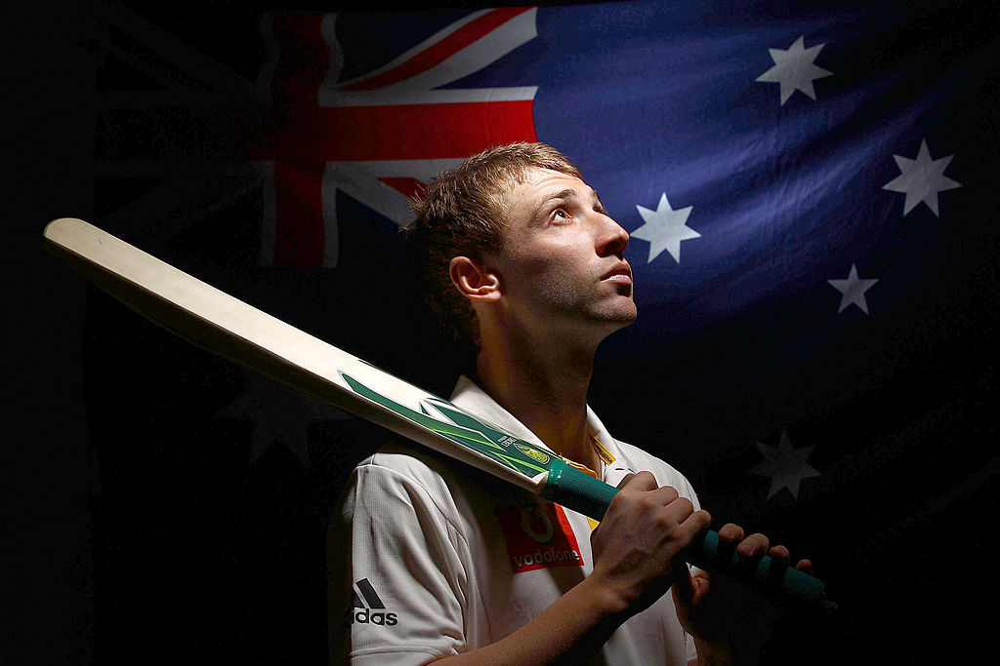

- Domestic Debut: Hughes made his first-class debut for New South Wales against Tasmania on November 20, 2007, at the Sydney Cricket Ground, becoming the youngest New South Wales debutant since Michael Clarke.
- International Debut: He earned his Test cap for Australia on February 26, 2009, against South Africa in Johannesburg. Despite a challenging start with a first-innings duck, he scored 75 runs in the second innings. In the subsequent Test in Durban, Hughes made history by becoming the youngest player to score centuries in both innings of a Test match.
- One Day International (ODI) Debut: Hughes debuted in ODIs on January 11, 2013, against Sri Lanka at the Melbourne Cricket Ground, where he scored a remarkable 112*, becoming the first Australian to score a century on ODI debut.